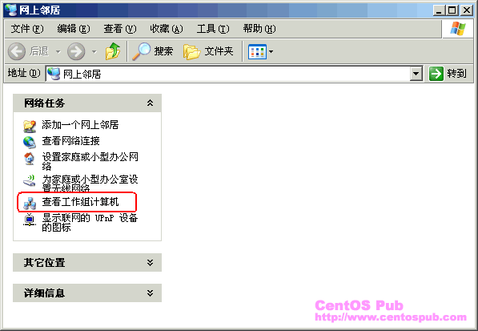
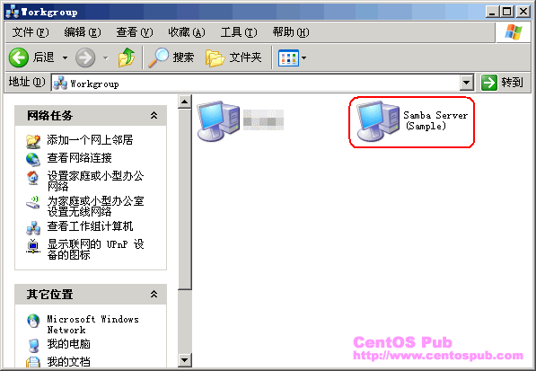
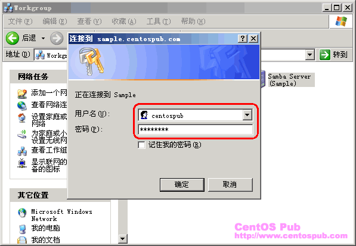
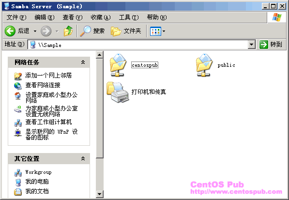

<<< 返回［配置详解］索引
< Samba 服务器的构建 > （最近更新日：2007/01/29）
在我们使用 Windows 作为客户机的时候，通常有文件、打印共享的需求。作为Windows 网络功能之一，通常可以在 Windows 客户机之间通过 Windows Network 固有的功能实现这些要求。然而，通过 Samba 我们也可以让一台 CentOS 主机来兼容 Windows 网络，实现同样的功能，进而充分发挥 CentOS 主机的可用性。
本篇文档主要介绍怎样通过 Samba 服务器的构建实现 Windows 网络中的文件共享。
首先，通过 yum 来在线安装 Samba 。
[root@sample ~]# yum -y install samba ← 安装 Samba
Setting up Install Process
Setting up repositories
update 100% |=========================| 951 B 00:00
base 100% |=========================| 1.1 kB 00:00
addons 100% |=========================| 951 B 00:00
extras 100% |=========================| 1.1 kB 00:00
Reading repository metadata in from local files
primary.xml.gz 100% |=========================| 73 kB 00:00
update : ################################################## 212/212
Added 212 new packages, deleted 0 old in 4.94 seconds
primary.xml.gz 100% |=========================| 569 kB 00:00
base : ################################################## 1500/1500
Added 1500 new packages, deleted 0 old in 28.97 seconds
primary.xml.gz 100% |=========================| 157 B 00:00
Added 0 new packages, deleted 0 old in 0.03 seconds
primary.xml.gz 100% |=========================| 32 kB 00:00
extras : ################################################## 124/124
Added 124 new packages, deleted 0 old in 1.93 seconds
Parsing package install arguments
Resolving Dependencies
--> Populating transaction set with selected packages. Please wait.
---> Downloading header for samba to pack into transaction set.
samba-3.0.10-1.4E.9.i386. 100% |=========================| 101 kB 00:00
---> Package samba.i386 0:3.0.10-1.4E.9 set to be updated
--> Running transaction check
--> Processing Dependency: samba-common = 0:3.0.10 for package: samba
--> Restarting Dependency Resolution with new changes.
--> Populating transaction set with selected packages. Please wait.
---> Downloading header for samba-common to pack into transaction set.
samba-common-3.0.10-1.4E. 100% |=========================| 37 kB 00:00
---> Package samba-common.i386 0:3.0.10-1.4E.9 set to be updated
--> Running transaction check
Dependencies Resolved
=============================================================================
Package Arch Version Repository Size
=============================================================================
Installing:
samba i386 3.0.10-1.4E.9 base 13 M
Installing for dependencies:
samba-common i386 3.0.10-1.4E.9 base 5.0 M
Transaction Summary
=============================================================================
Install 2 Package(s)
Update 0 Package(s)
Remove 0 Package(s)
Total download size: 18 M
Downloading Packages:
(1/2): samba-common-3.0.1 100% |=========================| 5.0 MB 00:04
(2/2): samba-3.0.10-1.4E. 100% |=========================| 13 MB 00:11
warning: rpmts_HdrFromFdno: V3 DSA signature: NOKEY, key ID 443e1821
Public key for samba-common-3.0.10-1.4E.9.i386.rpm is not installed
Retrieving GPG key from http://mirror.centos.org/centos/RPM-GPG-KEY-centos4
Importing GPG key 0x443E1821 "CentOS-4 key <centos-4key@centos.org>"
Key imported successfully
Running Transaction Test
Finished Transaction Test
Transaction Test Succeeded
Running Transaction
Installing: samba-common ######################### [1/2]
Installing: samba ######################### [2/2]
Installed: samba.i386 0:3.0.10-1.4E.9
Dependency Installed: samba-common.i386 0:3.0.10-1.4E.9
Complete!
|
然后，通过编辑 /etc/samba/smb.conf ，根据需求配置 Samba。在这里，本文的原则是只将文件共享应用于内网，并让将要被共享的目录拥有充分的读写权限属性。
[root@sample ~]# vi /etc/samba/smb.conf ← 编辑 Samba 的配置文件
#======================= Global Settings =====================================
[global] ← 找到这一行（全局设置标签），在此行下面添加如下行：
dos charset = GB2312 ← 将 Windows 客户端的文字编码设置为简体中文 GB2312
unix charset = GB2312 ← 指定 Samba 所在的 CentOS 服务端新建文件或目录时的编码为 GB2312
display charset = GB2312 ← 指定使用 SWAT（一种通过浏览器控制Samba的工具）时页面的默认文字编码
directory mask = 0777 ← 指定新建目录的属性（以下4行）
force directory mode = 0777
directory security mask = 0777
force directory security mode = 0777
create mask = 0777 ← 指定新建文件的属性（以下4行）
force create mode = 0777
security mask = 0777
force security mode = 0777
workgroup = MYGROUP ← 找到此行，将工作组名称改为 Windows 网络所定义的工作组名
↓
workgroup = WORKGROUP ← 变为此状态，这里以 Windows XP 默认的“WORKGROUP”为例
; hosts allow = 192.168.1. 192.168.2. 127. ← 找到此行，去掉行首的“;”，并制定访问限制
↓
hosts allow = 192.168.0. 127. ← 变为此状态，指定内网IP地址及本地，只允许这两种情况的访问
然后在配置文件的末尾填如下几行，定义公众共享目录：
[public]
comment = Public Stuff
path = /home/samba ← 指定共享目录位置
public = yes
writable = yes ← 赋予共享目录写入权限的属性 |
接下来，创建将要通过 Samba 共享给 Windows 网络的专用目录。
[root@sample ~]# mkdir /home/samba ← 建立共享文件专用目录
[root@sample ~]# chown -R nobody. /home/samba ← 设置专用目录归属为 nobody
[root@sample ~]# chmod 777 /home/samba ← 将专用目录属性设置为 777 |
在进行到服务端的连接之前，需要预先对用于登录 Samba 的用户进行设置。这里我们以 CentOS 中 Samba 标准的 Samba 用户数据库管理工具“smbpasswd”为例，创建用于登录 Samba 的用户数据。这里需要注意的一点：用 smbpasswd 创建用户的前提是，系统用户中存在该用户 -- 在基于系统用户之上，才可以创建该用户在 Samba 用户数据库中的信息。
[root@sample ~]# smbpasswd -a centospub ← 将系统用户 centospub（例）加入到 Samba 用户数据库
New SMB password: ← 输入该用户用于登录 Samba 的密码
Retype new SMB password: ← 再次确认输入该密码
Added user centospub. |
在启动 Samba 服务之前，首先将防火墙设置中 Samba 所用到的端口进行开放。
[root@sample ~]# vi /etc/sysconfig/iptables ← 编辑 iptables 配置文件
-A RH-Firewall-1-INPUT -m state --state NEW -m tcp -p tcp --dport 25 -j ACCEPT ← 找到此行，在下面添加如下行：
-A RH-Firewall-1-INPUT -m state --state NEW -m tcp -p tcp --dport 139 -j ACCEPT
-A RH-Firewall-1-INPUT -m state --state NEW -m tcp -p tcp --dport 445 -j ACCEPT
-A RH-Firewall-1-INPUT -p udp -m udp --dport 137 -j ACCEPT
-A RH-Firewall-1-INPUT -p udp -m udp --dport 138 -j ACCEPT
[root@sample ~]# /etc/rc.d/init.d/iptables restart ← 重新启动 iptables ，使新的规则生效
Flushing firewall rules: [ OK ]
Setting chains to policy ACCEPT: filter [ OK ]
Unloading iptables modules: [ OK ]
Applying iptables firewall rules: [ OK ]
|
最后，启动 Samba 服务。
[root@sample ~]# chkconfig smb on ← 设置 Samba 自启动
[root@sample ~]# chkconfig --list smb ← 确认 Samba 启动标签，确认 2-5 为 on 的状态
smb 0:off 1:off 2:on 3:on 4:on 5:on 6:off
[root@sample ~]# /etc/rc.d/init.d/smb start ← 启动 Samba 服务
Starting SMB services: [ OK ]
Starting NMB services: [ OK ] |
| 从 Windows 客户端连接到 Samba 服务器 |
|
在服务端启动 Samba 服务后，我们就可以从 Windows 客户端通过 Windows 网络连接到 Samba。这里以 Windows XP 为例，说明如下连接过程：
1、从桌面打开“网上邻居”，并点击“查看工作组计算机”选项；

2、确认出现 Samba 服务端的连接，并双击该连接；（本站文档的主机名以 Sample 为例）

3、输入在服务端预先设置好的 Samba 用户的用户名及密码；（用户名同系统用户名，密码需要输入在通过 smbpasswd 为该系统用户设置的 Samba 专用的密码。）

4、然后确认能够连接到 Samba 服务器，并出现根目录及 Samba 专用共享目录。

最后，在相应目录进行新建、修改以及删除文件的操作，测试相应权限的可操作性。